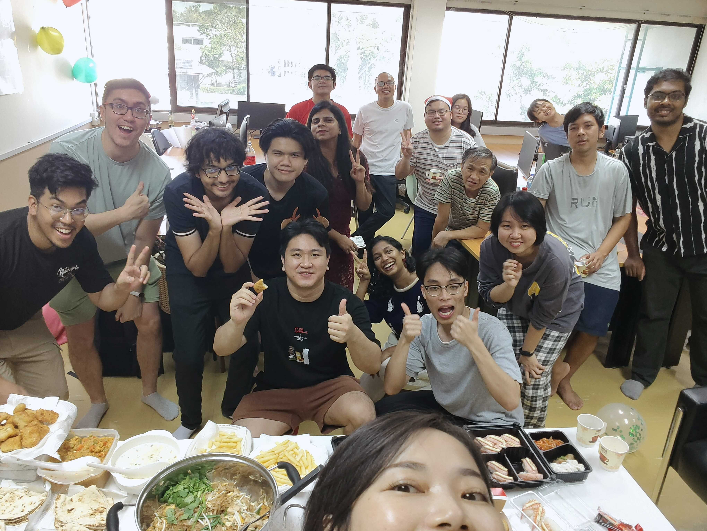

A guy from Hong Kong. I am an Assistant Professor at the Computer Science and Information Management Program, Asian Institute of Technology (AIT), Thailand.My AIT Brain Lab works in the area of Human-Centered NLP and Human-AI Interaction, primarily on understanding and modeling humans, designing health and well-being technologies and technologies that empower human lives.
I am currently an active reviewer and author for CHI, ACL, and Neurips conference. I am also a recipient of CHI best paper award in 2017, and CHI best paper award in 2026.
I am a recipient of a Gates Foundation project on DPI, Toyota Mobility Foundation project on crash analysis, Ramadibodhi project on spine medical images analysis, KAKENHI Young Scientist grant, a Young Scientist grant by TRF, a National Science and Technology Development Agency Toray Science grant, and a member of a JST grant project and NBTC project.
I received my Ph.D. and postdoc under the supervision of XiangshiRen, Center for Human-Engaged Computing, Japan.
I am co-authoring work on "Human-Engaged Computing" with Xiangshi Ren, a philosophical piece discussing the need for technologies to augment humans for better survivability. This provides the philosophical ground for my research.
I am also a co-founder of a company I called "AI Brain Lab", spinning off some of our research projects to commercialization.
News
- (June 2026) Nice! I got a big grant from Gates Foundation to work on Digital Public Infrastructure. Let's go!
- (May 2026) Congrats to Deepali for her ACM Trans. Health. paper titled "SpineXR-VQA: A Clinically-Validated Visual Question Answering Dataset for Spine X-Rays".
- (April 2026) Got invited to review Neurips. I promise myself I won't use AI for review! (Now I am reviewing CHI, ACL, and Neurips)
- (April 2026) Congrats to our student Arya Shah, for publishing his ACL 2026 paper titled "Too Nice to Tell the Truth: Quantifying Agreeableness-Driven Sycophancy in Role-Playing Language Models".
- (March 2026) Wow, congrats to our student Mehul Parmar, for publishing his best paper award CHI 2026 paper titled "From Overload to Convergence: Supporting Multi-Issue Human–AI Negotiation with Bayesian Visualization"
- (Feb 2026) Presented Advanced Prompting at AIIB, Bejing. Quite huge hall with 300+ participants.
- (Aug 2025) Congrats to AIT CSIM for getting a new project grant on sign language by NBTC. I will be contributing to a work package on Sign2Text. (Amount: 13,303,064.49 Baht)(Duration: 3 years)
- (Jul 2025) Presented Introduction to GenAI at a cybersecurity workshop organized by AsiaConnect and AI Center.
- (Feb 2025) Working on a project with Toyota on crash analytics on LDCM + grab + CCTV data.
- (Feb 2025) I am traveling to Fiji to lead some Digital Transformation workshop, with collaboration with ITU.
- (Dec 2024) Yay, I got the best teacher award (large class category) at AIT.
- (March 2024) Open my startup "AI Brain Lab"!
- (Sep 2023) Congrats to Pranisaa Charnparttaravanit on her grant on Royal Golden Jubilee PhD.: RGJPHD by National Research Council of Thailand (NRCT) (Amount: 1,690,000 Baht) (Duration: 1st Sep 2023 - 28th Feb 2026)
- (Mar 2023) Congrats to Chanapa Pananookooln on her paper at Computational Linguistics entitled "Comparing selective masking methods for depression detection in social media". She will be presenting her work at ACL 2023.
- (Apr 2022) Our WellTech center has acquired a 14M baht project from NBTC to work on elderly people + Raman spectroscopy + computer vision system.
- (Feb 2021) Just got the news that I got accepted for young scientist grant titled "การสะกดภาษาไทยผ่าน BCI ด้วยระบบ ไฮบริด SSVEP-P300" by สำนักงานปลัดกระทรวงการอุดมศึกษา วิทยาศาสตร์ วิจัยและนวัตกรรม (สป.อว.).
- (June 2020) Yay got a grant from เงินงบประมาณแผ่นดิน: ปีงบประมาณ 2563 from PMU
- (Jan. 2020) Got a job. Officially starting at AIT!
- (Oct. 2019) Visiting my friend Dr. Nem Khan Dim, an expert in HCI+Accessibility at Yangoon University!
- (Jan. 2019) Yay got NSTDA grant in collaboration with Toray Science Foundation, amounted 190,000 baht.
- (Dec. 2018) Yay, congrats to Dr. Kavous on "The relationship between flow proneness in everyday life and variations in the volume of gray matter in the dopaminergic system: a cross-sectional study" at Personality and Individual Differences
- (Dec. 2018) Just finished my class on "Introduction to Data Science" @ Kasetsart University. Great bunch of students.
- (Oct. 2018) Yay just received a "Stamford Competitive Grant" on Brain-Computer Interfaces amounted 234,000 baht.
- (Oct. 2018) Congrats to our IT program. We have won the bid on being the host for IEEE YESIST12 in 2019, a hackathon competition inviting universities from around the world. Time to work!
- (March 2018) Congrats to Dr. Sayan and Dr. Jussi on publishing "Ability-Based Optimization of Touchscreen Interactions" at IEEE Pervasive Computing!
- (Jan. 2018) Hooray! Our SIG proposal got accepted -> Approaching Engagement towards Human-Engaged Computing
- (Jan. 2018) Our book chapter "A Quick Look on Game Engagement Theories" has been published.
- (April 2017) Congrats to Kavous Salazadeh for getting the travel fund to CHI 2017 as well - from the NEC C& C, for his paper entitled "A Framework for Interactive Meditation Using Attention Regulation".
- (April 2017) Congrats to Mahmoud Hussein for getting the travel fund to CHI 2017 - Gary Marsden Student Development Fund, for the paper entitled "Understanding the Role of Human Senses in Interactive Meditation". Enjoy CHI!
- (March 2017) I have relocated from the Kochi University of Technology to Stamford International University (STIU), Thailand. My status at KUT changed from "Assistant Professor" to "Visiting Researchers".
- (Dec 2016) Congrats to our team at Center for Human-Engaged Computing, KUT for two full papers, two notes, one LBW and one workshop at this CHI 2017
- (March 2015) Yahoo! Received a Grant-in-Aid for Scientific Research by MEXT (Ministry of Education, Culture, Sports, Science, and Technology), Japan for the topic "Investigating Cognitive Enhancement of Elderly People by Using Motion Video Games"
Courses
- Data Structure and Algorithms (Slides)
- Software Architecture Design (Slides)
- Programming for Data Science (Github)
- Machine Learning (Slides, Github, Youtube)
- Natural Language Processing (Course Page, Slides, Github, Youtube)
- Deep Learning (Course Page, Slides, Github)
- Human Computer Interaction
Link to TEAL Moodle
Speakers
- [Jan 2026] "Data Science and AI: Evolution, Applications, and Future Directions" and Workshop on how machine learning works - UNITAR
- [Feb 2025] "Deploying emerging technologies for digital transformation" - Workshop on Digital Transformation for the Pacific, Fiji
- [Jan 2025] "Are we missing out opportunities in this AI era"? - Viriya and Thanachart Insurance
- [Jan 2025] "ESG Reporting with Generative AI" - High Impact Leadership
- [Oct 2024] "Current State of AI Adoption in Thailand Insurance Business" - TQR
- [Oct 2024] "Will AI Replace Humans" (video) - South Eastern University of Sri Lanka
- [Aug 2024] "Large Language Models" - AI Summer Camp, AIT
- [Aug 2024] "Top-tier research" - AIT Brain Lab
- [Aug 2024] "AI + Insurance" - Intara Insurance
- [Jul 2024] "AI and Deep Learning" - AI Bootcamp for School of Integrated Innovation, Chulalongkorn
- [Jul 2024] "AI + Insurance" - Viriyah Insurance
- [Jul 2024] "AI + Insurance" - Thanachart Insurance
- [April 2024] "Intro of AI for Policy Maker" - United Nations, Thailand
- [Jan 2024] "Deep Learning" - AI Bootcamp for School of Integrated Innovation, Chulalongkorn
- [Jan 2024] "Machine Learning for Insurance with Power BI" - Rsquare (https://rsquareth.com)
- [Nov 2023] "AI for Insurance" - Transforming AIA through Technology, Digital and Analytics
- [June 2023] "Large Language Model" - IIT Alumni Association
- [Sep 2022] "Brain Computer Interface" - AIT Summer Education Camp
- [Nov 2021] "Machine Learning and Deep Learning" - University of Sumatera Utara
- [Jun 2021] "Data Analytics with Rapidminer" - AIT Extension
- [April 2021] "Digital Transformation" - KBTG Tech Campus - https://brandinside.asia/kbtg-tech-kampus-to-support-tech-research/
Industry collaboration
Note: Clients are not disclosed publicly.
- [2024 - present] AI customer service chatbots
- [2024 - present] Medical VQA with bone fractures
- [2023 - present] Crash analysis with LDCM + CCTV
- [2022 - 2023] Developing BCI speller for locked-in patients
Academic Services
- [2025 - present] Academic Program Coordinator of Data Science and AI Program, Asian Institute of Technology
- [Jan 2024 - Present] Chair, AI and Simulation Lab, Asian Institute of Technology
- [Mar 2024 - Present] Reviewer (ACL, CHI, Neurips)
- [Mar 2024 - April 2026] Faculty Relation Committee, Asian Institute of Technology
- [Sep 2023 - Dec 2025] Chair, AIT Sustainability Positioning Task Force, Asian Institute of Technology
- [Sep 2023 - Present] Doctoral Progress Review Committee, Asian Institute of Technology
- [2021 - 2024] Academic Program Coordinator of Computer Science Program, Asian Institute of Technology
- [July 2021 - July 2023] Ethic Committee, Asian Institute of Technology
- [2019] Computer Science Curricula Advisor, Yangon University
- [2019] Data Science Curricula Development, Stamford International University
- [2019] IEEE YESIST 2019 Stamford Local
- [2018] Program Committee AC in CHI LBW 2018
- [2017] Program Committee in Video Competitions (CHCHI 2017)
- [2017] Associate Chair (DIS 2017 in Provocation and WIP)
- [2016-2019] Vice-Secretary General, ICACHI
- [2016] General Co-Chair, ACM IxAP 2016
- [2013-2016] Technical Liaison, ACM Chinese CHI 2013-2016
- [2014] Publicity Chair, IDHF 2014
- [2016-2019] External Reviewers: ACM CHI 2016-2019, ACM DIS 2016-2018, IEEE Trans. on Human-Machine Systems
- [2012-2013] Student Volunteer, WISS 2013, ACM APCHI 2012
- [2010] Staffs, Techfest iNexus Thailand
Grants
-
[May 2026 - May 2029] Gates Foundation (PI): Advancing Opensource Digital Public Infrastructure in Asia-Pacific (3,000,000 USD / ~105,000,000 Baht).
-
[May 2026 - Nov 2026] Toyota Mobility Foundation (PI): Integrated traffic analytics platform in Chatuchak Bangkok (500,000 Baht).
-
[June 2024 - June 2027] Toyota Mobility Foundation (co-PI): Black Spots Improvement in Chachoengsao (3,984,814 Baht).
-
[Oct 2025 - Sep 2026] Thailand Fundamental Fund (co-PI): AI System for Stroke Prediction and Recovery Analysis (2,000,000 Baht).
-
[Oct 2025 - Sep 2027] Office of the National Broadcasting and Telecommunications Commission (co-PI): โครงการพัฒนาภูมิปัญญาภาษามือและการนำไปประยุกต์ใช้ (13,303,064.49 Baht).
-
[1st Sep 2023 - 28th Feb 2026] Royal Golden Jubilee PhD.: RGJPHD by National Research Council of Thailand (NRCT) (PI): Developing Question-Answering system using Large Language Models for Thai Applications (1,690,000 Baht).
-
[June 2022 - June 2025] Office of the National Broadcasting and Telecommunications Commission (co-PI): Telehealth Monitoring and Assistive Systems for Elderly and Disabled People (14,000,000 Baht).
-
[March 2021 - March 2023] Ministry of Higher Education, Science, Research and Innovation (MHESI), Young Scientist (PI): Hybrid P300-SSVEP BCI Speller for Thai Language (595,000 Baht).
-
[October 2020 - October 2021] Thailand Science Research and Innovation (TSRI) (PI): Hybrid P300-SSVEP BCI Speller for Thai Language (124,750 Baht).
-
[March 2019 - March 2020] Thailand Toray Science (PI): National Science and Technology Development Agency: Hybrid P300-SSVEP BCI Speller for Thai Language (190,000 Baht).
-
[September 15, 2018 -– September 14, 2019] Stamford Competitive Internal Grants (PI): Developing Brain-Computer Interfaces Using P300 (234,000 Baht), .(The acceptance rate is around 30%.)
-
[April 1, 2016 -– March 31, 2018] Grant-in-Aid for Scientific Research by MEXT (PI): Ministry of Education, Culture, Sports, Science and Technology, Japan (No.16K21300) (4,992,000 JPY): Investigating Cognitive Enhancement of Elderly People by Using Motion Video Games.(The acceptance rate is around 20-25%.)
-
[April 1, 2015 — March 31, 2017] Japan-Finland Collaborative Research Projects by JST, AF and Tekes (co-PI): Japan-Finland Collaborative Research Projects by JST, AF and Tekes (18,000,000 JPY): User Interface Design for the Ageing Population.(The acceptance rate is 18%.)